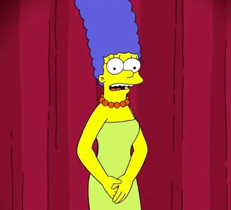

Marjorie "Marge" Jaqueline Bouvier-Simpson é a esposa de Homer Simpson e mãe de Lisa, Bart e Maggie Simpson no desenho animado Os Simpsons.
Ela é mais conhecida por causa de seus longos cabelos azuis e de sua personalidade muito paciente.Já namorou com Artie Ziff. Mesmo Homer aprontando inúmeras confusões, ela continua sendo uma esposa fiel e dedicada, assim como é para com os filhos.